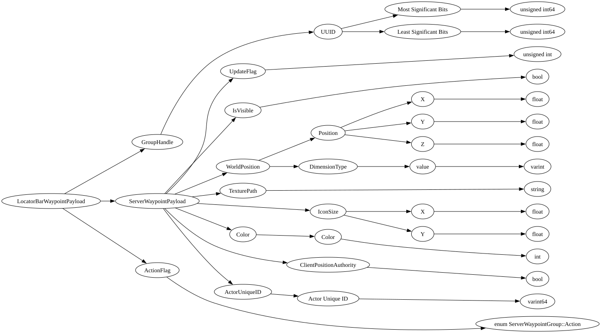

| Field Name | Field Type | Field Constraints | Field Notes |
|---|---|---|---|
| GroupHandle | WaypointGroup::WaypointHandle | WaypointGroup::WaypointHandle used to lookup Waypoint in WaypointGroups. | |
| ServerWaypointPayload | ServerWaypoint::Payload | Contains the optional data to add or update the client Waypoint. | |
| ActionFlag | enum ServerWaypointGroup::Action | Enum which defines if the Waypoint operation was an add, remove or update. |